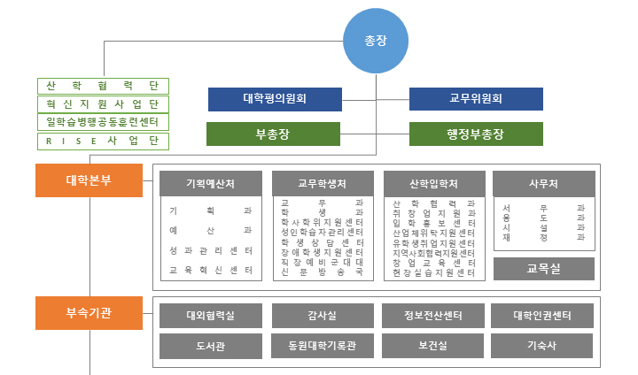

시스템관리자님
환영합니다.
주요현황
로그아웃
조직·인력 관리
조직·인력 관리
업무 현황 및 세부사업 추진 계획
시스템관리자님
환영합니다.
주요현황
로그아웃
부서/인력 구성
핵심 추진과제 및 업무 분장
교무학생처
부서/인력 구성
핵심 추진과제 및 업무 분장
부서/인력 구성
부서 정보

조직 구성 정보
구성 조직
보직자
차장
과장
팀장
주임
직원
책임
기타
처장
센터장
부센터장
총괄
1
1
교무과
1
2
1
학생과
1
겸직1
1
3
겸직1
성인학습자관리센터
1
1
1
1
겸직1
계
1
1
1
3(2)
1
1
6(3)
1
부서 목록
수정
삭제